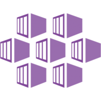
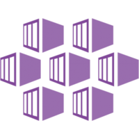
Building Workflows on AKS with Argo
Tarun Pabbi
tarunpabbi7
Rahul Rai
rahulrai_in
syncfusion.com/ebooks
syncfusion.com/ebooks
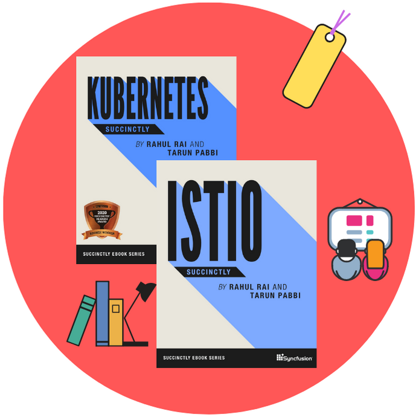
Azure Kubernetes Service
Managed Kubernetes cluster in Azure
Pay and manage the workload nodes
Supports Windows and Linux containers
Pay and manage the workload nodes
Supports Windows and Linux containers
Workflows in Azure
PaaS
Azure Logic AppsAzure Durable Functions
AKS
Azure Durable Functions on ContainersApache Airflow
Argo Workflows
Selecting a Workflow Solution
Development
Low barrier to entryTight coupling with Kubernetes: logs, metrics, secrets
Use existing investments in DevOps
Operations
Workflow orchestration decoupled from execution\stepsReuse steps across workflows
Scale with volume
Argo
Open source projects built by Intuit
CNCF incubating project
Four independent components: Workflows, CD, Rollouts, Events
Community with marquee names: Adobe, Google, GitHub etc.
CNCF incubating project
Four independent components: Workflows, CD, Rollouts, Events
Community with marquee names: Adobe, Google, GitHub etc.
.
Argo CD
GitOps CD tool for Kubernetes
Automates deployment of desired application states to target environments
Automates deployment of desired application states to target environments
.
Argo Rollouts
Enhances Kubernetes deployment with CRD - Rollouts
Blue-Green & Canary
Declarative, configurable, GitOps-friendly options
Blue-Green & Canary
Declarative, configurable, GitOps-friendly options
.
Argo Events
Triggers K8s objects, Workflows, Functions on events
Support for sources such as Webhooks, S3, GCP PubSub, Azure EventHub, SQS
Support for sources such as Webhooks, S3, GCP PubSub, Azure EventHub, SQS
.
Questions?
Argo Workflows
Container native workflow engine for Kubernetes
Workflow and Events defined as CRD
Cloud agnostic
Orchestrate highly parallel jobs
Cloud scale supercomputer
Tight affinity with K8s resources: Secrets, ConfigMaps, Volumes
Utilizes K8s features: affinity, toleration, resource limit
Workflow and Events defined as CRD
Cloud agnostic
Orchestrate highly parallel jobs
Cloud scale supercomputer
Tight affinity with K8s resources: Secrets, ConfigMaps, Volumes
Utilizes K8s features: affinity, toleration, resource limit
Workflow
YAML definitions
"Templates" are workflow steps
Declare DAG and dependencies
"Templates" are workflow steps
Declare DAG and dependencies
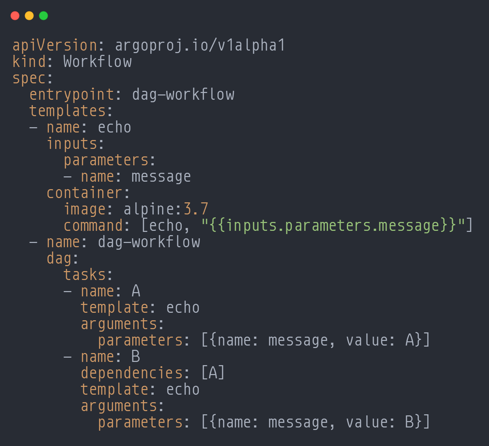
Workflow CLI

Beyond The Basics
Passing parameters
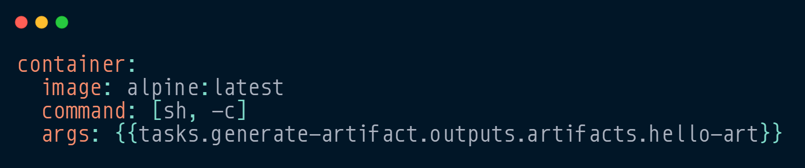 Artifacts
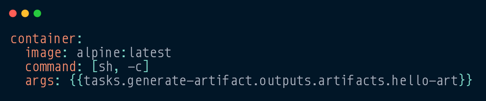 Artifacts
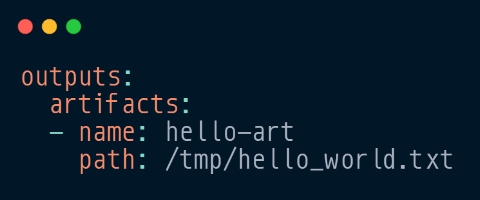
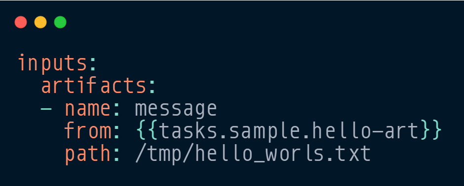
.
Beyond The Basics
Memoized resubmission

Suspend & Resume
Suspend & Resume
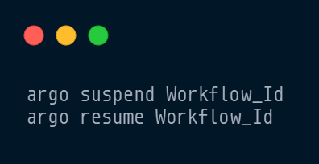
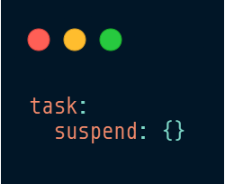
.
Even More?
Sidecars and Daemon containers
All DAG features: conditions, subroutines, loops, recursion
Generate DAG with code
Notify on complete with post-run hooks
Create new K8s resources
All DAG features: conditions, subroutines, loops, recursion
Generate DAG with code
Notify on complete with post-run hooks
Create new K8s resources
.
Deployment Models
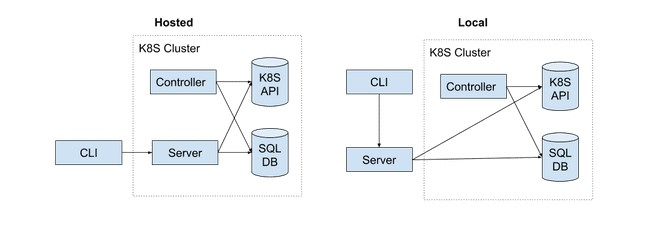Workflow Triggers
Manual & scheduled
Event based (Argo Events)
Argo REST API (for unsupported events)
Event based (Argo Events)
- K8s events
- GitHub, Slack, Webhooks
- Cloud resource: Az Event Hub, GCP PubSub, AWS SQS
Argo REST API (for unsupported events)
Workflow UI
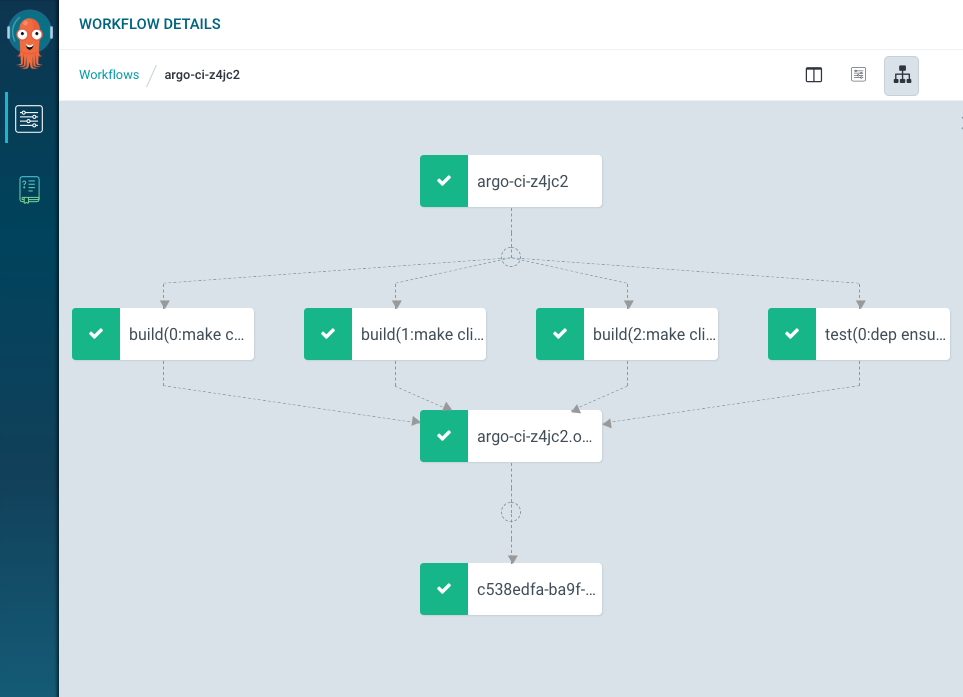Questions?
Demo
- Source code: https://bit.ly/argo_demo
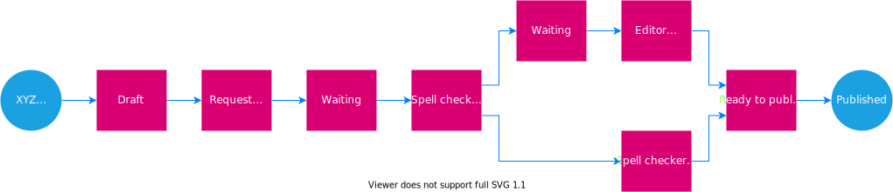
.
Continuous Deployment
Use existing deployment strategies
Package and upgrade with Helm
Deployment and rollback is easy
Package and upgrade with Helm
Deployment and rollback is easy
.
Try It Yourself
Everything you saw today: https://bit.ly/argo_demo
Tarun Pabbi
tarunpabbi7
Rahul Rai
rahulrai_in